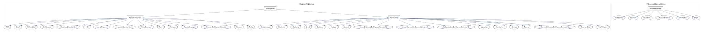

Framework
The package framework has two jobs. First, it gives users a small set of generic operations for diversity and pairwise comparison. Second, it exposes the conventions behind those operations as machine-readable metadata.
This page describes the type structure, input and output contracts, architecture, goals, non-goals, and metadata traits that future versions should preserve.
Type Structure
The public type hierarchy has two roots:
DiversityIndex: alpha-diversity and pairwise comparison indices.ShannonEstimator: entropy and information-divergence estimators.
DiversityIndex splits into:
AlphaDiversityIndex, for one-assemblage summaries such asRichness,Shannon,Hill,Chao1, andPielouEvenness.PairwiseIndex, for two-assemblage comparisons such asJaccard,BrayCurtis,Hellinger,KullbackLeibler, andJensenShannon.
The tree is intentionally shallow. Most behavior lives in methods and metadata traits rather than deep inheritance.

The type-tree assets are generated from exported package types:
julia --project=docs docs/make_type_trees.jlThe script writes DOT, SVG, and PDF files under docs/src/assets.
Data Inputs
Input interpretation is deliberately consistent across the package. See Data Input Formats for the full reference including orientation rules, keyword parameters, and the pre-validated pipeline.
| Input | Interpretation |
|---|---|
| Dictionary | category => abundance map. |
| Numeric vector | Abundance vector by default. |
| Non-numeric vector | Raw observations. |
Numeric vector with frequencies=false | Raw observations represented by numeric labels. |
| Matrix | Samples in rows, taxa/categories in columns. |
| Tables.jl-compatible table | Converted with community_matrix; use species to choose taxa columns. |
julia> using DiversityAndDissimilarity
julia> counts(["oak", "ash", "oak"]) == Dict("oak" => 2, "ash" => 1)
true
julia> richness([1, 2, 1, 3]; frequencies=false)
3
julia> community = [1 1 2 0 5; 3 0 1 1 0];
julia> richness(community)
2-element Vector{Int64}:
4
3Invalid abundance data fails early with a message identifying the row and column: negative values, non-finite values, and all-zero rows are not silently repaired.
Outputs
The main output contracts are:
- scalar values for one assemblage;
- vectors of row-wise values for community matrices;
- dense pairwise matrices for community-matrix pairwise comparisons;
- named tuples for labeled matrix helpers and audits;
- named tuples for metadata, bounds, estimator reports, and validation results.
julia> metadata = index_metadata(BrayCurtis());
julia> metadata.output_mode
:dissimilarity
julia> metadata.bounds.lower_meaning
"minimal dissimilarity; identical or indistinguishable inputs"
julia> labeled_distance(BrayCurtis(), community; labels=["a", "b"]).labels
2-element Vector{String}:
"a"
"b"Architecture
The source layout follows the main conceptual layers:
src/DiversityAndDissimilarity.jl: module, exports, and includes.src/utilities.jl: input handling,counts,proportions, andcommunity_matrix.src/diversity.jl: alpha-diversity indices, entropy estimators, uncertainty, bootstrap/jackknife, and alpha summaries.src/similarity.jl: pairwise similarity, dissimilarity, distance, and divergence indices.src/framework.jl: metadata traits, reference cases, estimator reports, and audit helpers.validation: external reference datasets and cross-package manifests.docs: Documenter manual and generated assets.notes: LaTeX notes, references, and manuscript-style materials.
The generic operations are the center of the API:
entropy(index, data)
diversity(index, data)
effective_diversity(index, data)
similarity(index, left, right)
dissimilarity(index, left, right)
distance(index, left, right)Convenience functions should call the same implementation path rather than forming a parallel API.
Detailed Goals
- Provide clear, tested implementations of common diversity and pairwise comparison indices.
- Make convention choices explicit, especially where names differ across fields or packages.
- Keep row-wise community matrix semantics stable.
- Support dictionaries, vectors, matrices, observation vectors, and Tables.jl-compatible data.
- Keep the runtime dependency footprint small.
- Reuse estimator objects across entropy and information-divergence workflows.
- Maintain cross-package validation against hand calculations, vegan, scikit-bio, SciPy, iNEXT, and published examples.
- Keep documentation executable or generated where that reduces drift.
Detailed Non-Goals
- The package is not a full ecological modelling framework.
- It is not an ordination, regression, null-model, or rarefaction-curve package.
- It should not absorb every index from every ecosystem without clear convention, tests, and documentation.
- It should not hide convention differences behind a single string-based
methodinterface. - It should not add heavy runtime dependencies for optional documentation, plotting, validation, or manuscript workflows.
- It should not overstate mathematical properties. Use
:unknownwhere the package has not encoded a confident claim.
Metadata And Traits
index_metadata collects convention-aware metadata:
julia> m = index_metadata(JensenShannon());
julia> m.family
:probability
julia> m.is_metric
true
julia> m.is_bounded
trueThe lower-level helpers are plain functions so generic workflows can branch on them without depending on internal implementation details:
julia> index_family(BrayCurtis())
:abundance
julia> output_mode(Jaccard())
:similarity
julia> is_symmetric(KullbackLeibler())
false
julia> is_triangular(Overlap())
:unknown
julia> index_range(PielouEvenness())
(lower = 0.0, upper = 1.0)index_bounds adds interpretation to numeric ranges. For a similarity, the lower bound usually means no overlap. For a dissimilarity or distance, the lower bound usually means identical or indistinguishable inputs.
julia> index_bounds(Jaccard()).lower_meaning
"minimal similarity; conventionally complete dissimilarity or no overlap"
julia> index_bounds(KullbackLeibler()).upper_meaning
"unbounded dissimilarity; larger values mean greater separation"Metric-Like Traits
The metric helpers are conservative:
| Trait | Meaning in this package |
|---|---|
is_metric | Nonnegative, zero iff identical, symmetric, triangular. |
is_pseudometric | Metric-like but distinct inputs may have zero distance. |
is_quasimetric | Metric-like but symmetry is not required. |
is_metametric | Nonnegative, symmetric, zero for identical inputs; no triangle claim. |
is_semimetric | Nonnegative, symmetric, zero iff identical; no triangle claim. |
is_premetric | Nonnegative and zero for identical inputs. |
is_supermetric | Reverse-triangle or supermetric-style condition; uncommon here. |
Unknown classifications return :unknown.
Reports And Audits
The framework also provides small reporting helpers:
julia> r = estimator_report([1, 1, 2, 0, 5]);
julia> r.observed_richness
4
julia> all(result -> result.passed, validate_reference_cases())
true
julia> audit = diversity_audit(community; labels=["a", "b"]);
julia> audit.n_samples
2Use uncertainty_audit for row-wise bootstrap summaries during workflow checks.
Reference
DiversityAndDissimilarity.index_metadata — Function
index_metadata(index)Return convention-aware metadata for an index as a named tuple, including: family, input and output modes, numeric range and interpreted bounds, all property trait values, formula, aliases, and implementation notes.
julia> using DiversityAndDissimilarity
julia> m = index_metadata(BrayCurtis());
julia> m.family
:abundance
julia> m.output_mode
:dissimilarity
julia> m.is_metric
false
julia> m.is_semimetric
true
julia> m.is_symmetric
trueDiversityAndDissimilarity.index_family — Function
index_family(index)Return a symbolic family label for an index, such as :entropy, :richness, :evenness, :incidence, :abundance, or :probability.
julia> using DiversityAndDissimilarity
julia> index_family(Shannon())
:entropy
julia> index_family(BrayCurtis())
:abundance
julia> index_family(Jaccard())
:incidenceDiversityAndDissimilarity.input_mode — Function
input_mode(index)Return the expected input style for an index: :single_assemblage, :pairwise, or :either.
julia> using DiversityAndDissimilarity
julia> input_mode(Shannon())
:single_assemblage
julia> input_mode(BrayCurtis())
:pairwiseDiversityAndDissimilarity.output_mode — Function
output_mode(index)Return the conventional output form, such as :entropy, :diversity, :similarity, :dissimilarity, :distance, :coefficient, or :estimate.
julia> using DiversityAndDissimilarity
julia> output_mode(Shannon())
:entropy
julia> output_mode(Jaccard())
:similarity
julia> output_mode(BrayCurtis())
:dissimilarity
julia> output_mode(Hellinger())
:distanceDiversityAndDissimilarity.is_finite — Function
is_finite(index)Return whether the index is expected to return finite values for valid finite inputs. This is separate from is_bounded: an index can be finite on every finite data set while having no fixed finite upper bound.
KullbackLeibler returns Inf when right has zero probability where left has positive probability, so is_finite returns false for it.
julia> using DiversityAndDissimilarity
julia> is_finite(JensenShannon())
true
julia> is_finite(KullbackLeibler())
falseDiversityAndDissimilarity.is_metric — Function
is_metric(index)Return whether the package's distance/dissimilarity form is a metric under the usual assumptions for the index: nonnegative, zero only for identical inputs, symmetric, and satisfying the triangle inequality.
julia> using DiversityAndDissimilarity
julia> is_metric(Jaccard())
true
julia> is_metric(BrayCurtis())
false
julia> is_metric(JensenShannon())
trueDiversityAndDissimilarity.is_triangular — Function
is_triangular(index)Return whether the package's distance/dissimilarity form is known to obey the triangle inequality. Returns :unknown when this package does not encode a claim.
All indices for which is_metric is true are also triangular.
julia> using DiversityAndDissimilarity
julia> is_triangular(Jaccard())
true
julia> is_triangular(BrayCurtis())
false
julia> is_triangular(Overlap())
:unknownDiversityAndDissimilarity.is_nonnegative — Function
is_nonnegative(index)Return whether the index output is known to be nonnegative.
All indices implemented in this package return nonnegative values for valid inputs.
julia> using DiversityAndDissimilarity
julia> is_nonnegative(Shannon())
true
julia> is_nonnegative(KullbackLeibler())
trueDiversityAndDissimilarity.is_bounded — Function
is_bounded(index)Return whether the conventional output range has a finite upper bound.
Uses index_range to determine boundedness. Indices such as BrayCurtis, Jaccard, and JensenShannon are bounded in [0, 1]. Entropy, richness, and divergence indices are typically unbounded above.
julia> using DiversityAndDissimilarity
julia> is_bounded(Jaccard())
true
julia> is_bounded(KullbackLeibler())
false
julia> is_bounded(JensenShannon())
trueDiversityAndDissimilarity.is_pseudometric — Function
is_pseudometric(index)Return whether the distance/dissimilarity form is known to be a pseudometric: nonnegative, symmetric, zero for identical inputs, and satisfying the triangle inequality, while allowing distinct inputs to have zero distance.
Returns :unknown where that classification is not encoded.
julia> using DiversityAndDissimilarity
julia> is_pseudometric(Jaccard())
true
julia> is_pseudometric(ShannonDifference())
true
julia> is_pseudometric(BrayCurtis())
false
julia> is_pseudometric(Overlap())
:unknownDiversityAndDissimilarity.is_quasimetric — Function
is_quasimetric(index)Return whether the distance/dissimilarity form is known to be a quasimetric: nonnegative, zero only for identical inputs, and satisfying the triangle inequality, without requiring symmetry. Every metric is also a quasimetric.
Returns :unknown where that classification is not encoded.
julia> using DiversityAndDissimilarity
julia> is_quasimetric(Jaccard())
true
julia> is_quasimetric(BrayCurtis())
false
julia> is_quasimetric(Overlap())
:unknownDiversityAndDissimilarity.is_metametric — Function
is_metametric(index)Return whether the distance/dissimilarity form is known to be a metametric (see generalizations of metric spaces) under this package's convention: nonnegative, symmetric, and zero for identical inputs, without requiring the identity of indiscernibles or the triangle inequality. Returns :unknown where that classification is not encoded.
julia> using DiversityAndDissimilarity
julia> is_metametric(BrayCurtis())
true
julia> is_metametric(KullbackLeibler())
false
julia> is_metametric(Jaccard())
trueDiversityAndDissimilarity.is_semimetric — Function
is_semimetric(index)Return whether the distance/dissimilarity form is known to be a semimetric under this package's convention: nonnegative, symmetric, zero only for identical inputs, but not necessarily satisfying the triangle inequality.
Returns :unknown where that classification is not encoded.
julia> using DiversityAndDissimilarity
julia> is_semimetric(BrayCurtis())
true
julia> is_semimetric(Overlap())
false
julia> is_semimetric(Jaccard())
trueDiversityAndDissimilarity.is_premetric — Function
is_premetric(index)Return whether the distance/dissimilarity form is known to be a premetric: nonnegative and zero for identical inputs, without requiring symmetry or the triangle inequality. This is the weakest of the standard metric-like properties.
Returns :unknown where that classification is not encoded.
julia> using DiversityAndDissimilarity
julia> is_premetric(BrayCurtis())
true
julia> is_premetric(KullbackLeibler())
true
julia> is_premetric(Shannon())
:unknownDiversityAndDissimilarity.is_supermetric — Function
is_supermetric(index)Return whether the index is known to obey a supermetric or reverse-triangle style condition, as in an ultrametric ($d(x,z) \leq \max(d(x,y), d(y,z))$). This property is uncommon for the indices implemented here, so unknown cases return :unknown.
julia> using DiversityAndDissimilarity
julia> is_supermetric(Jaccard())
false
julia> is_supermetric(BrayCurtis())
:unknownDiversityAndDissimilarity.is_similarity — Function
is_similarity(index)Return whether the primary output mode is a similarity or similarity coefficient.
julia> using DiversityAndDissimilarity
julia> is_similarity(Jaccard())
true
julia> is_similarity(Bhattacharyya())
true
julia> is_similarity(BrayCurtis())
falseDiversityAndDissimilarity.is_dissimilarity — Function
is_dissimilarity(index)Return whether the primary output mode is a dissimilarity or distance.
julia> using DiversityAndDissimilarity
julia> is_dissimilarity(BrayCurtis())
true
julia> is_dissimilarity(Hellinger())
true
julia> is_dissimilarity(Jaccard())
falseDiversityAndDissimilarity.is_dissimiliarty — Function
is_dissimiliarty(index)Deprecated misspelling of is_dissimilarity, retained as a forgiving alias.
DiversityAndDissimilarity.is_symmetric — Function
is_symmetric(index)Return whether the pairwise form satisfies f(a, b) == f(b, a) for all inputs.
Most indices are symmetric. KullbackLeibler is the notable exception: dissimilarity(KullbackLeibler(), a, b) computes $D_{KL}(a \Vert b)$ which generally differs from $D_{KL}(b \Vert a)$. Community distance matrices for asymmetric indices are not symmetric matrices.
julia> using DiversityAndDissimilarity
julia> is_symmetric(BrayCurtis())
true
julia> is_symmetric(KullbackLeibler())
falseDiversityAndDissimilarity.index_range — Function
index_range(index)Return a conventional numeric range for the index output when it is known.
julia> using DiversityAndDissimilarity
julia> index_range(Jaccard())
(lower = 0.0, upper = 1.0)
julia> index_range(Shannon())
(lower = 0.0, upper = Inf)
julia> index_range(JensenDifference())
(lower = 0.0, upper = 1.0)DiversityAndDissimilarity.index_bounds — Function
index_bounds(index)Return a named tuple describing the conventional numeric bounds and the usual interpretation of those bounds. Unknown meanings are returned as :unknown.
The fields lower_meaning and upper_meaning explain what the extremes conventionally signify. For a similarity, the lower bound means complete dissimilarity or no overlap; for a dissimilarity or distance, it means identical or indistinguishable inputs.
julia> using DiversityAndDissimilarity
julia> b = index_bounds(Jaccard());
julia> b.lower, b.upper
(0.0, 1.0)
julia> b.lower_meaning
"minimal similarity; conventionally complete dissimilarity or no overlap"
julia> b.upper_meaning
"maximal similarity; conventionally identical or complete overlap"julia> using DiversityAndDissimilarity
julia> b = index_bounds(BrayCurtis());
julia> b.lower_meaning
"minimal dissimilarity; identical or indistinguishable inputs"
julia> b.upper_meaning
"maximal dissimilarity under the index convention"julia> using DiversityAndDissimilarity
julia> b = index_bounds(KullbackLeibler());
julia> b.upper
Inf
julia> b.upper_meaning
"unbounded dissimilarity; larger values mean greater separation"DiversityAndDissimilarity.requires_probabilities — Function
requires_probabilities(index)Return whether an index is naturally defined on normalized probability vectors.
julia> using DiversityAndDissimilarity
julia> requires_probabilities(Hellinger())
true
julia> requires_probabilities(BrayCurtis())
falseDiversityAndDissimilarity.supports_matrix_kernel — Function
supports_matrix_kernel(index)Return whether this package has a specialized matrix implementation for the index. Indices with a matrix kernel compute pairwise distance matrices more efficiently than the fallback that calls the pairwise method once per pair.
julia> using DiversityAndDissimilarity
julia> supports_matrix_kernel(BrayCurtis())
true
julia> supports_matrix_kernel(Canberra())
falseDiversityAndDissimilarity.reference_cases — Function
reference_cases()Return curated cross-package and formula reference cases used to validate conventions.
DiversityAndDissimilarity.validate_reference_cases — Function
validate_reference_cases(; cases=reference_cases())Evaluate reference cases and return one result named tuple per case.
julia> using DiversityAndDissimilarity
julia> results = validate_reference_cases();
julia> all(r -> r.passed, results)
true
julia> results[1].name
"vegan_shannon_natural_log"DiversityAndDissimilarity.estimator_report — Function
estimator_report(data; support=nothing, base=2, frequencies=true, species=nothing)Return a compact report comparing Shannon entropy estimators and basic coverage diagnostics for one assemblage.
julia> using DiversityAndDissimilarity
julia> r = estimator_report([1, 1, 2, 0, 5]);
julia> r.observed_richness
4
julia> r.singletons
2
julia> r.estimates[1].name
:pluginDiversityAndDissimilarity.diversity_audit — Function
diversity_audit(data; species=nothing, labels=nothing, label=nothing,
pairwise_index=BrayCurtis())Return validation diagnostics, alpha summaries, estimator diagnostics, and an optional labeled pairwise matrix for a diversity workflow.
julia> using DiversityAndDissimilarity
julia> community = [1 1 2 0 5; 3 0 1 1 0];
julia> audit = diversity_audit(community; labels=["a", "b"]);
julia> audit.n_samples
2
julia> audit.n_taxa
5
julia> audit.pairwise.labels
2-element Vector{String}:
"a"
"b"DiversityAndDissimilarity.uncertainty_audit — Function
uncertainty_audit(data; species=nothing, labels=nothing, label=nothing,
index=Shannon(), nboot=1000, level=0.95,
quantities=(:entropy, :diversity), rng=nothing)Return bootstrap uncertainty summaries for Shannon entropy and effective diversity alongside sample labels and coverage diagnostics. For matrices and Tables.jl-compatible inputs, one report is returned per sample.
julia> using DiversityAndDissimilarity
julia> community = [1 1 2 0 5; 3 0 1 1 0];
julia> ua = uncertainty_audit(community; labels=["a", "b"], nboot=50, rng=nothing);
julia> length(ua.reports)
2
julia> ua.labels
2-element Vector{String}:
"a"
"b"
julia> ua.reports[1].label
"a"